#1✓ Checked 13 Oct£1,990
#1✓ Checked 13 Oct£1,990
2006 · Red · Mazda MX-5
Mazda MX-5 1.8i
Cheapest way into a low-mileage NC. A strong pick if it's solid underneath.
- Miles
- 59,000
- From GU7
- 19 mi
- MOT
- May 2027 (ad)
◉ Ashford · Trade
We opened all 50 ads (the first 25 within 80 miles on 13 October, then 25 more up to 120 miles, badged New). They're grouped into roadsters, hatch convertibles and folding hard-tops: MX-5, Z3/Z4, TT Roadster, MR2, MG, Smart, MINI, SLK and Eos. All are under £3,000, with no Cat S/N, non-runners, broken roofs or heavily modified cars. Photos are the sellers' own.
“Buy the best-documented car you can find, not the cheapest. The big bills hide in the history file.”
MX-5, Z3/Z4, TT Roadster, MR2, MG, Smart: two seats, fabric roof, the purest fun. Overall rank shown on each card.
#1✓ Checked 13 Oct£1,990
Cheapest way into a low-mileage NC. A strong pick if it's solid underneath.
◉ Ashford · Trade
 #2✓ Checked 13 OctNew£1,499
#2✓ Checked 13 OctNew£1,499
A cheap, documented Mk1 roadster. Belt history is the deal-breaker.
◉ Hendon · Private
 #3✓ Checked 13 Oct£990
#3✓ Checked 13 Oct£990
Cheapest car here at £990, with low miles.
◉ Southend-On-Sea · Trade
 #4✓ Checked 13 Oct£2,499
#4✓ Checked 13 Oct£2,499
An honest private NC. Get the ABS fixed before you buy.
◉ Worcester Park · Private
 #7✓ Checked 13 Oct£1,750
#7✓ Checked 13 Oct£1,750
Cheap with a hardtop. Budget for a hood and head-gasket checks.
◉ Oxted · Private
 #8✓ Checked 13 Oct£2,500
#8✓ Checked 13 Oct£2,500
Low miles for the money. Needs a close look.
◉ Reading · Trade
 #9✓ Checked 13 Oct£1,995
#9✓ Checked 13 Oct£1,995
Low-mileage TF. Earlier find.
◉ Shaftesbury · Private
 #10✓ Checked 13 Oct£1,850
#10✓ Checked 13 Oct£1,850
The cheapest sound Z4: rear-wheel drive for £1,850.
◉ Eltham · Private
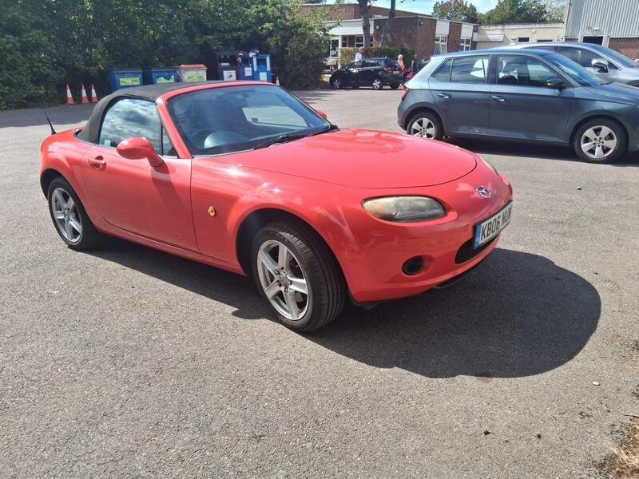
#11✓ Checked 13 Oct£2,400A tidy, fairly priced NC with a long MOT.
◉ Reading · Private
 #13✓ Checked 13 Oct£1,995
#13✓ Checked 13 Oct£1,995
Cheap NB. Earlier find from the MX-5 hunt.
◉ Buckingham · Private
 #14✓ Checked 13 Oct£2,300
#14✓ Checked 13 Oct£2,300
Lovely spec, but get the pre-cat question answered.
◉ Pulborough · Private
 #16✓ Checked 13 Oct£2,800
#16✓ Checked 13 Oct£2,800
Rust already dealt with, which is a real plus on an NC.
◉ Reading · Private
 #19✓ Checked 13 Oct£2,250
#19✓ Checked 13 Oct£2,250
A cherished MGF. Head-gasket proof is everything.
◉ Staines · Private
 #20✓ Checked 13 Oct£3,000
#20✓ Checked 13 Oct£3,000
The closest car. A low-mileage Z3 at the £3k limit.
◉ Cranleigh · Trade
 #21✓ Checked 13 Oct£1,795
#21✓ Checked 13 Oct£1,795
A cheap mid-engined MR2, and a later car.
◉ Hockley · Private
 #23✓ Checked 13 OctNew£1,999
#23✓ Checked 13 OctNew£1,999
A low-mileage Z4 with its chain sorted. One of the best-value roadsters here.
◉ Birmingham · Trade
 #25✓ Checked 13 OctNew£2,195
#25✓ Checked 13 OctNew£2,195
A freshly sorted 2.0 NC at £2,195. Cheap and close, and the bigger engine is the fun one.
◉ Milton Keynes · Private
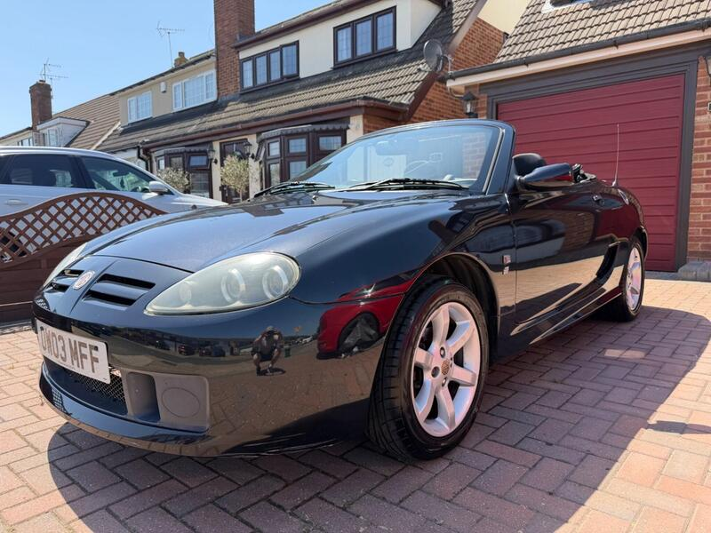
#27✓ Checked 13 Oct£2,490A documented TF at a sensible price.
◉ Stanford-Le-Hope · Private
 #28✓ Checked 13 OctNew£1,800
#28✓ Checked 13 OctNew£1,800
High miles but long, loving ownership. A cheap, low-rust Z4.
◉ Billericay · Private
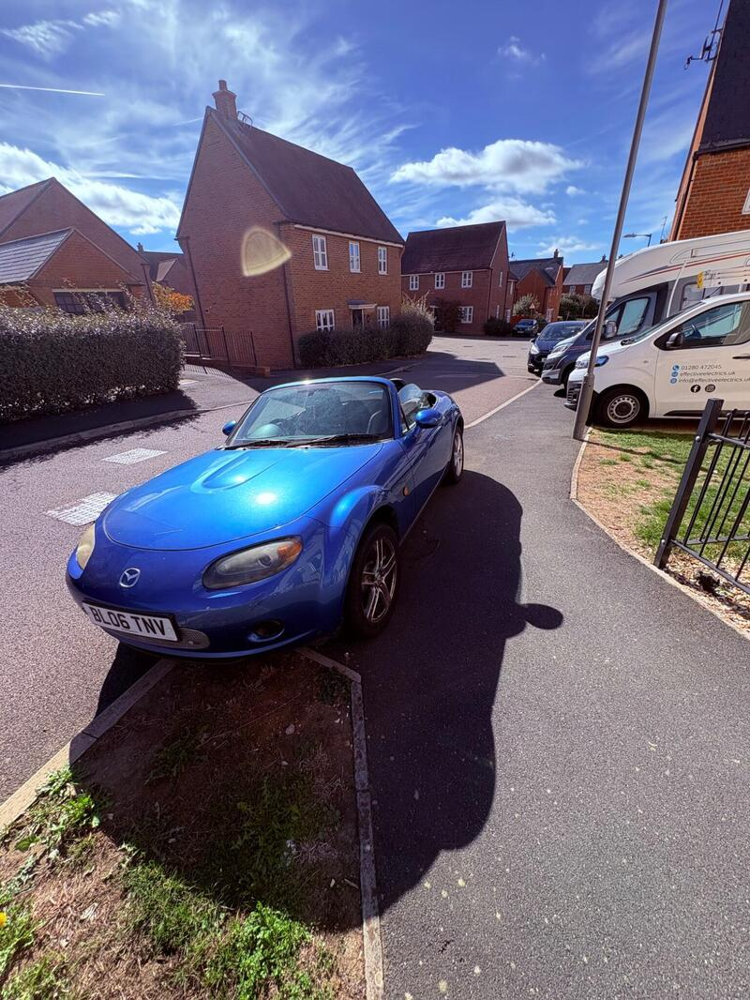
#30✓ Checked 13 OctNew£2,300An honest private 2.0 with a known screen crack. Use the crack to haggle.
◉ Buckingham · Private
 #31✓ Checked 13 OctNew£2,600
#31✓ Checked 13 OctNew£2,600
A 2.0 TFSI with the big jobs done, 28 mi away. A strong value buy.
◉ South Norwood · Private
 #32✓ Checked 13 Oct£2,999
#32✓ Checked 13 Oct£2,999
The Z4's big roof-motor risk has already been fixed.
◉ Ilford · Private
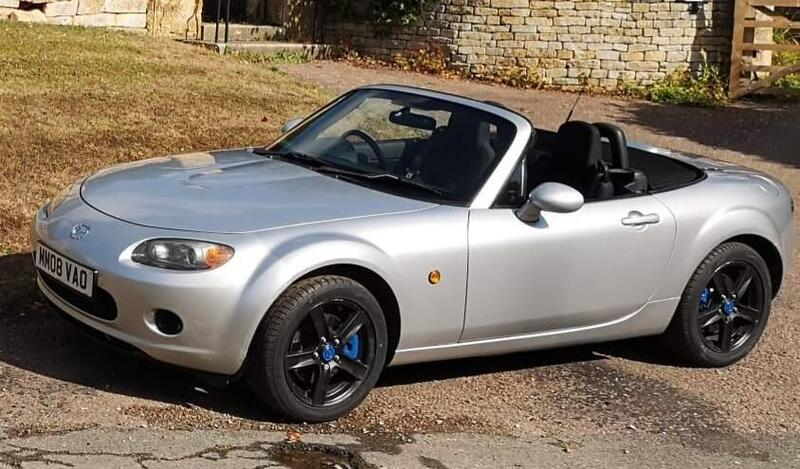
#33✓ Checked 13 Oct£2,750One of the best-prepared cars here, and worth the drive.
◉ Carterton · Private
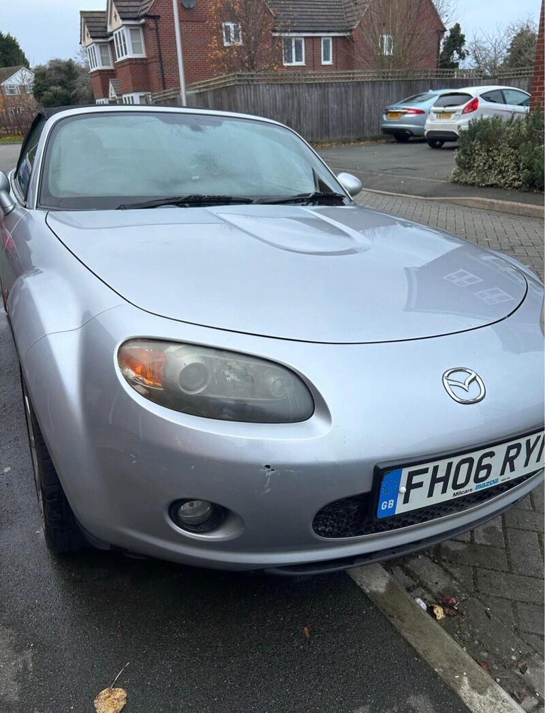
#34✓ Checked 13 OctNew£2,500Unknown quantity: there's no description. View it only with full paperwork.
◉ Leamington Spa · Private
 #35✓ Checked 13 OctNew£2,975
#35✓ Checked 13 OctNew£2,975
The closest MG at 29 mi, with a long MOT. Cheap fun.
◉ Bognor Regis · Private
 #36✓ Checked 13 OctNew£2,990
#36✓ Checked 13 OctNew£2,990
The newest TT here, with a long MOT. A comfortable, quick roof-down cruiser.
◉ The Hyde · Private
 #37✓ Checked 13 Oct£2,950
#37✓ Checked 13 Oct£2,950
A well-presented private Z3. Earlier find.
◉ Thatcham · Private
 #39✓ Checked 13 OctNew£2,995
#39✓ Checked 13 OctNew£2,995
A tidy-sounding 1.8 from a trader. Good, but it's a long way away.
◉ Nottingham · Trade
 #41✓ Checked 13 OctNew£2,750
#41✓ Checked 13 OctNew£2,750
A low-mileage Z3, simple and robust.
◉ Bristol · Private
 #43✓ Checked 13 OctNew£2,950
#43✓ Checked 13 OctNew£2,950
The lowest-mileage TT, with the classic weak spots already addressed. Excellent paperwork story.
◉ Walsall · Private
 #44✓ Checked 13 OctNew£2,700
#44✓ Checked 13 OctNew£2,700
A cared-for 2.0 Sport. The ECU swap means you must verify the true mileage.
◉ Leicester · Private
 #45✓ Checked 13 Oct£2,900
#45✓ Checked 13 Oct£2,900
Fun, but buy only if it's bone dry.
◉ Gerrards Cross · Private
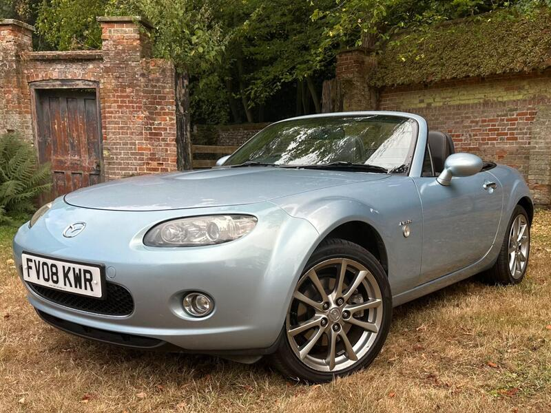
#46✓ Checked 13 OctNew£2,995A special-edition NC with a long MOT. Worth the drive if it's solid.
◉ Wymondham · Private
 #47✓ Checked 13 Oct£2,995
#47✓ Checked 13 Oct£2,995
The replacement engine is a plus. Get it MOT'd first.
◉ Upper Edmonton · Trade
 #48✓ Checked 13 OctNew£2,995
#48✓ Checked 13 OctNew£2,995
The enthusiast's MGF, with the head gasket done and a hardtop included.
◉ Yeovil · Private
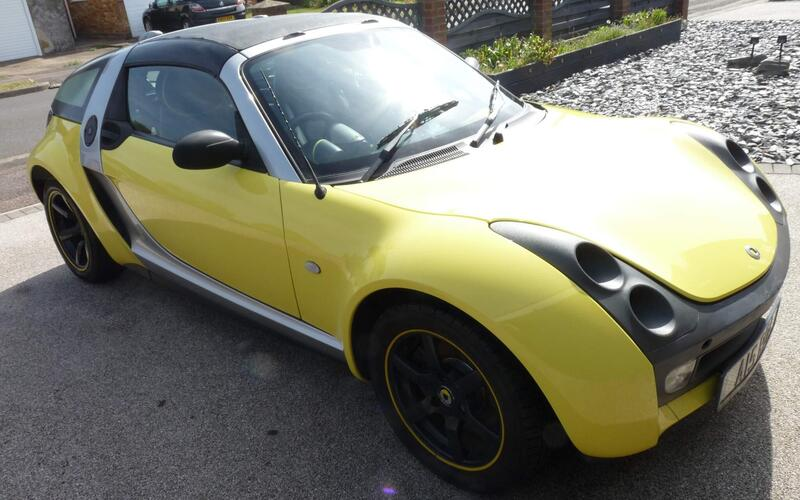
#49✓ Checked 13 OctNew£2,795A characterful Roadster Coupé, but the mileage is very high.
◉ Dunstable · Private
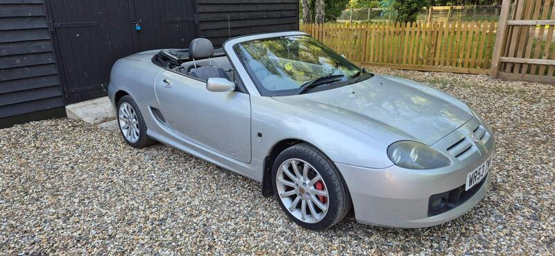
#50✓ Checked 13 OctNew£2,995A neat TF. Check its head gasket history before buying.
◉ Thetford · Private
MINI: hot-hatch handling with a roof that folds. Overall rank shown on each card.
 #5✓ Checked 13 Oct£1,995
#5✓ Checked 13 Oct£1,995
A supercharged Cooper S for under £2k.
◉ Windsor · Trade
 #6✓ Checked 13 Oct£2,500
#6✓ Checked 13 Oct£2,500
The lowest-mileage Mini here.
◉ Greenford · Trade
 #15✓ Checked 13 OctNew£2,499
#15✓ Checked 13 OctNew£2,499
The best hot-hatch convertible here: manual, supercharged and documented.
◉ New Southgate · Private
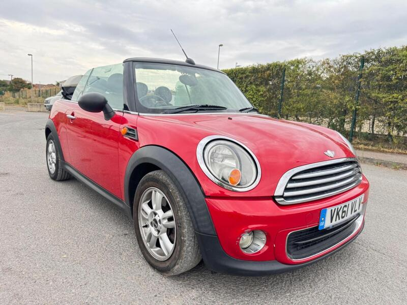
#17✓ Checked 13 Oct£2,398A solid dealer R57 with a long MOT.
◉ Leighton Buzzard · Trade
 #22✓ Checked 13 Oct£2,999
#22✓ Checked 13 Oct£2,999
A late R57 with a dealer sweetener.
◉ Sandhurst · Trade
 #38✓ Checked 13 Oct£3,000
#38✓ Checked 13 Oct£3,000
A well-loved private R57.
◉ Maidstone · Trade
 #42✓ Checked 13 OctNew£2,995
#42✓ Checked 13 OctNew£2,995
A low-mileage, sensible MINI from a trader.
◉ Stourport-On-Severn · Trade
SLK, Eos: a metal roof for winter, open air in summer. Overall rank shown on each card.
 #12✓ Checked 13 OctNew£2,200
#12✓ Checked 13 OctNew£2,200
Close and cheap, but a long-listed ad. Check it carefully.
◉ Surbiton · Private
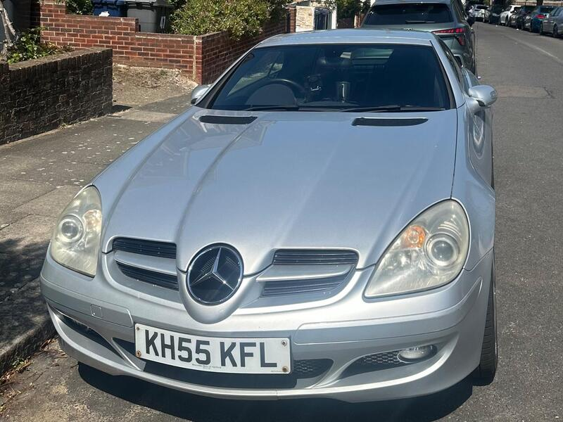
#18✓ Checked 13 OctNew£2,595Lots of V6 for the money, but query the 'chassis' claim first.
◉ New Southgate · Private
 #24✓ Checked 13 OctNew£2,200
#24✓ Checked 13 OctNew£2,200
The cheapest R171 at £2,200. A good folding hard-top starter.
◉ Bromley · Private
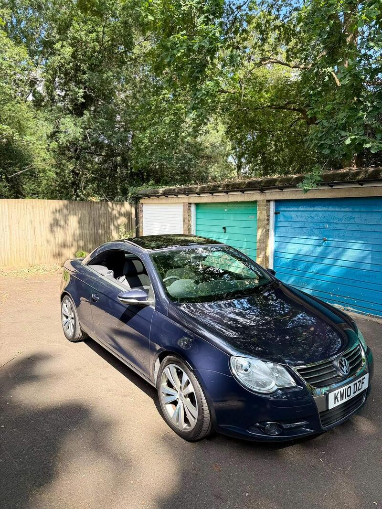
#26✓ Checked 13 OctNew£2,800A very low-mileage Eos. A solid-roof all-rounder rather than a sports car.
◉ Berkhamsted · Private
 #29✓ Checked 13 OctNew£2,999
#29✓ Checked 13 OctNew£2,999
The closest car in the new batch, with a fresh MOT.
◉ Camberley · Private
 #40✓ Checked 13 OctNew£2,750
#40✓ Checked 13 OctNew£2,750
The driver's SLK: a manual V6 with a long MOT.
◉ St. Albans · Private
Sources: Autocar · Parkers · CarThrottle · MX5OC forum
Sources: Classics World · Parkers · carchecker.pro
Sources: Parkers · carchecker.pro
Sources: mini-trader · AustralianCar.Reviews R52 · AustralianCar.Reviews R57
Sources: Parkers · Hagerty · Classics World
Sources: Classic & Sports Car · Octane
Sources: Autocar · Evilution · Smart Car Manuals
Sources: Classics World · Classic & Sports Car · TT Forum Mk2 Roadster · Audi Breaker Yards
Sources: Autocar · Classics World R170 · SLK World
Sources: What Car? · AutoTrader.ca · VW Eos Club
Value score = price + £12 per 1,000 miles + £15 per mile from GU7. Then a fun-factor credit (MX-5 highest, then Z4, MR2 and TT), a known-fault risk penalty (MG head gasket, Smart leaks, MINI drivetrain, Eos roof), and credits for full service history and an MOT into 2027. It's a rough guide, not gospel. Distances are the ones AutoTrader shows for GU7 1AA.